데이터 임상의학 w/ R (8)
Yoon-Ho Hong, MD, PhD
Sept 18, 2018
Curse of dimensionality
in circumstances of p >> n
using all the features to predict response variable
will face two drawbacks in terms of …
- interpretability
- increase of variance (overfitting)
so, we do
feature selection
- subset selection
- shrinkage (regularization)
- dimension reduction
Subset selection
가능한 경우의 수: \(2^p\)
stepwise selection: forward, backward
Shrinkage
아래 식을 최소로 하는 \(\beta\) 를 추정 (note: shrinkage penalty)
ridge regresssion
\[RSS + \lambda \sum_{j=1}^{p} \beta^2_j\]
\(\lambda\): tuning parameter
lasso regression
\[RSS + \lambda \sum_{j=1}^{p} |\beta_j|\]
library(glmnet)## Loading required package: Matrix## Loading required package: foreach## Loaded glmnet 2.0-13x = model.matrix(Salary~., Hitters)[,-1] # create a matrix, convert factors to a set of dummy variables
y = Hitters$Salarygrid = 10^seq(10, -2, length = 100) # lambda 를 10^10 에서 10^-2 까지 값을 갖도록 설정 ridge.mod = glmnet(x,y,alpha = 0, lambda = grid) # alpha = 0 for ridge regression, alpha = 1 for lasso regression
?glmnet # standardize = TRUE plot(ridge.mod)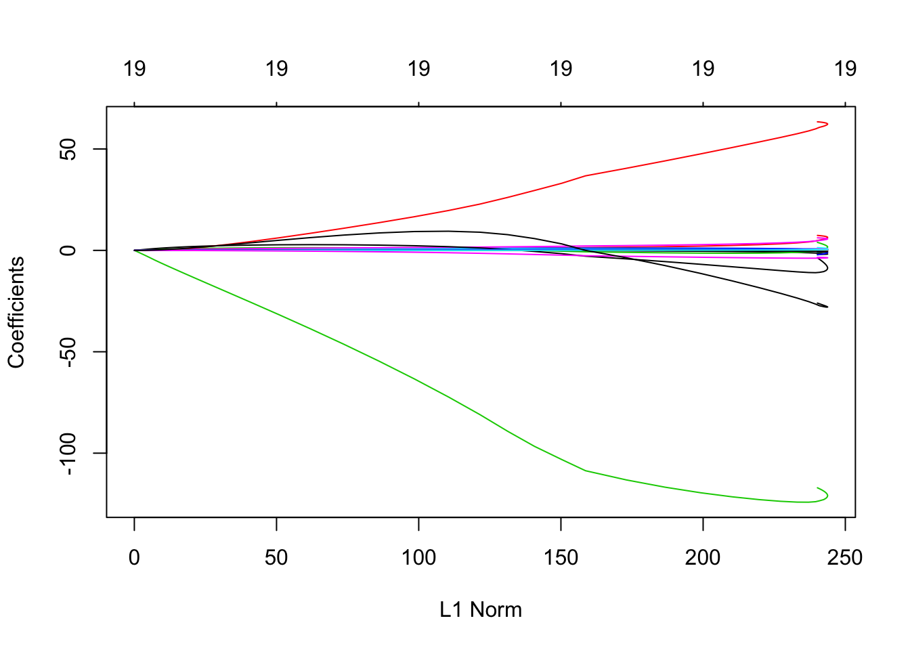
L2 norm: \(\sqrt{\sum_{j=1}^{p}\beta^2_j}\)
coef(ridge.mod)## 20 x 100 sparse Matrix of class "dgCMatrix"## [[ suppressing 100 column names 's0', 's1', 's2' ... ]]##
## (Intercept) 5.359257e+02 5.359256e+02 5.359256e+02 5.359254e+02
## AtBat 5.443467e-08 7.195940e-08 9.512609e-08 1.257511e-07
## Hits 1.974589e-07 2.610289e-07 3.450649e-07 4.561554e-07
## HmRun 7.956523e-07 1.051805e-06 1.390424e-06 1.838059e-06
## Runs 3.339178e-07 4.414196e-07 5.835307e-07 7.713931e-07
## RBI 3.527222e-07 4.662778e-07 6.163918e-07 8.148335e-07
## Walks 4.151323e-07 5.487803e-07 7.254552e-07 9.590089e-07
## Years 1.697711e-06 2.244274e-06 2.966798e-06 3.921931e-06
## CAtBat 4.673743e-09 6.178412e-09 8.167496e-09 1.079695e-08
## CHits 1.720071e-08 2.273832e-08 3.005872e-08 3.973585e-08
## CHmRun 1.297171e-07 1.714783e-07 2.266842e-07 2.996631e-07
## CRuns 3.450846e-08 4.561814e-08 6.030449e-08 7.971898e-08
## CRBI 3.561348e-08 4.707892e-08 6.223556e-08 8.227173e-08
## CWalks 3.767877e-08 4.980911e-08 6.584471e-08 8.704281e-08
## LeagueN -5.800263e-07 -7.667601e-07 -1.013611e-06 -1.339933e-06
## DivisionW -7.807263e-06 -1.032074e-05 -1.364341e-05 -1.803579e-05
## PutOuts 2.180288e-08 2.882212e-08 3.810115e-08 5.036747e-08
## Assists 3.561198e-09 4.707694e-09 6.223294e-09 8.226828e-09
## Errors -1.660460e-08 -2.195031e-08 -2.901702e-08 -3.835881e-08
## NewLeagueN -1.152288e-07 -1.523253e-07 -2.013646e-07 -2.661912e-07
##
## (Intercept) 5.359253e+02 5.359251e+02 5.359249e+02 5.359246e+02
## AtBat 1.662355e-07 2.197535e-07 2.905011e-07 3.840251e-07
## Hits 6.030105e-07 7.971441e-07 1.053777e-06 1.393031e-06
## HmRun 2.429805e-06 3.212059e-06 4.246151e-06 5.613159e-06
## Runs 1.019736e-06 1.348031e-06 1.782017e-06 2.355720e-06
## RBI 1.077162e-06 1.423944e-06 1.882370e-06 2.488380e-06
## Walks 1.267753e-06 1.675895e-06 2.215433e-06 2.928671e-06
## Years 5.184561e-06 6.853682e-06 9.060161e-06 1.197699e-05
## CAtBat 1.427293e-08 1.886796e-08 2.494233e-08 3.297227e-08
## CHits 5.252844e-08 6.943949e-08 9.179488e-08 1.213474e-07
## CHmRun 3.961369e-07 5.236695e-07 6.922600e-07 9.151265e-07
## CRuns 1.053838e-07 1.393111e-07 1.841610e-07 2.434499e-07
## CRBI 1.087584e-07 1.437721e-07 1.900582e-07 2.512456e-07
## CWalks 1.150654e-07 1.521097e-07 2.010800e-07 2.658157e-07
## LeagueN -1.771310e-06 -2.341563e-06 -3.095401e-06 -4.091926e-06
## DivisionW -2.384225e-05 -3.151805e-05 -4.166500e-05 -5.507866e-05
## PutOuts 6.658282e-08 8.801855e-08 1.163553e-07 1.538148e-07
## Assists 1.087538e-08 1.437661e-08 1.900503e-08 2.512352e-08
## Errors -5.070811e-08 -6.703317e-08 -8.861396e-08 -1.171425e-07
## NewLeagueN -3.518874e-07 -4.651715e-07 -6.149243e-07 -8.128848e-07
##
## (Intercept) 5.359241e+02 5.359236e+02 5.359228e+02 5.359218e+02
## AtBat 5.076583e-07 6.710939e-07 8.871458e-07 1.172753e-06
## Hits 1.841504e-06 2.434358e-06 3.218075e-06 4.254101e-06
## HmRun 7.420260e-06 9.809139e-06 1.296709e-05 1.714170e-05
## Runs 3.114121e-06 4.116682e-06 5.442006e-06 7.194001e-06
## RBI 3.289490e-06 4.348509e-06 5.748467e-06 7.599123e-06
## Walks 3.871529e-06 5.117929e-06 6.765594e-06 8.943705e-06
## Years 1.583287e-05 2.093010e-05 2.766833e-05 3.657585e-05
## CAtBat 4.358737e-08 5.761989e-08 7.617002e-08 1.006921e-07
## CHits 1.604140e-07 2.120577e-07 2.803274e-07 3.705758e-07
## CHmRun 1.209743e-06 1.599207e-06 2.114055e-06 2.794652e-06
## CRuns 3.218262e-07 4.254349e-07 5.623992e-07 7.434574e-07
## CRBI 3.321316e-07 4.390581e-07 5.804082e-07 7.672642e-07
## CWalks 3.513925e-07 4.645197e-07 6.140668e-07 8.117587e-07
## LeagueN -5.409262e-06 -7.150687e-06 -9.452719e-06 -1.249582e-05
## DivisionW -7.281073e-05 -9.625147e-05 -1.272387e-04 -1.682020e-04
## PutOuts 2.033341e-07 2.687955e-07 3.553316e-07 4.697270e-07
## Assists 3.321180e-08 4.390401e-08 5.803847e-08 7.672336e-08
## Errors -1.548557e-07 -2.047105e-07 -2.706157e-07 -3.577390e-07
## NewLeagueN -1.074570e-06 -1.420491e-06 -1.877758e-06 -2.482203e-06
##
## (Intercept) 5.359205e+02 5.359188e+02 5.359165e+02 5.359135e+02
## AtBat 1.550308e-06 2.049411e-06 2.709192e-06 3.581378e-06
## Hits 5.623662e-06 7.434134e-06 9.827459e-06 1.299127e-05
## HmRun 2.266028e-05 2.995547e-05 3.959923e-05 5.234760e-05
## Runs 9.510029e-06 1.257167e-05 1.661895e-05 2.196918e-05
## RBI 1.004557e-05 1.327962e-05 1.755482e-05 2.320633e-05
## Walks 1.182303e-05 1.562931e-05 2.066097e-05 2.731247e-05
## Years 4.835102e-05 6.391703e-05 8.449425e-05 1.116959e-04
## CAtBat 1.331088e-07 1.759615e-07 2.326100e-07 3.074953e-07
## CHits 4.898784e-07 6.475887e-07 8.560711e-07 1.131670e-06
## CHmRun 3.694358e-06 4.883710e-06 6.455953e-06 8.534349e-06
## CRuns 9.828049e-07 1.299207e-06 1.717468e-06 2.270381e-06
## CRBI 1.014276e-06 1.340809e-06 1.772464e-06 2.343081e-06
## CWalks 1.073095e-06 1.418563e-06 1.875249e-06 2.478955e-06
## LeagueN -1.651853e-05 -2.183616e-05 -2.886548e-05 -3.815735e-05
## DivisionW -2.223530e-04 -2.939372e-04 -3.885671e-04 -5.136619e-04
## PutOuts 6.209506e-07 8.208588e-07 1.085125e-06 1.434467e-06
## Assists 1.014236e-07 1.340758e-07 1.772398e-07 2.342998e-07
## Errors -4.729116e-07 -6.251642e-07 -8.264353e-07 -1.092508e-06
## NewLeagueN -3.281181e-06 -4.337273e-06 -5.733176e-06 -7.578145e-06
##
## (Intercept) 5.359095e+02 5.359042e+02 5.358972e+02 5.358880e+02
## AtBat 4.734346e-06 6.258482e-06 8.273267e-06 1.093664e-05
## Hits 1.717361e-05 2.270236e-05 3.001092e-05 3.967221e-05
## HmRun 6.920001e-05 9.147759e-05 1.209267e-04 1.598556e-04
## Runs 2.904181e-05 3.839128e-05 5.075051e-05 6.708833e-05
## RBI 3.067722e-05 4.055316e-05 5.360832e-05 7.086606e-05
## Walks 3.610528e-05 4.772871e-05 6.309393e-05 8.340541e-05
## Years 1.476545e-04 1.951889e-04 2.580254e-04 3.410894e-04
## CAtBat 4.064882e-07 5.373491e-07 7.103364e-07 9.390097e-07
## CHits 1.495993e-06 1.977598e-06 2.614240e-06 3.455823e-06
## CHmRun 1.128183e-05 1.491379e-05 1.971494e-05 2.606160e-05
## CRuns 3.001290e-06 3.967495e-06 5.244735e-06 6.933126e-06
## CRBI 3.097394e-06 4.094536e-06 5.412672e-06 7.155123e-06
## CWalks 3.277009e-06 4.331970e-06 5.726535e-06 7.570013e-06
## LeagueN -5.043982e-05 -6.667507e-05 -8.813458e-05 -1.164983e-04
## DivisionW -6.790292e-04 -8.976337e-04 -1.186614e-03 -1.568625e-03
## PutOuts 1.896273e-06 2.506748e-06 3.313751e-06 4.380543e-06
## Assists 3.097292e-07 4.094413e-07 5.412531e-07 7.154972e-07
## Errors -1.444246e-06 -1.909236e-06 -2.523944e-06 -3.336588e-06
## NewLeagueN -1.001651e-05 -1.323886e-05 -1.749685e-05 -2.312257e-05
##
## (Intercept) 5.358758e+02 5.358597e+02 5.358383e+02 5.358102e+02
## AtBat 1.445735e-05 1.911136e-05 2.526337e-05 3.339542e-05
## Hits 5.244352e-05 6.932585e-05 9.164225e-05 1.211414e-04
## HmRun 2.113157e-04 2.793399e-04 3.692586e-04 4.881167e-04
## Runs 8.868531e-05 1.172341e-04 1.549720e-04 2.048558e-04
## RBI 9.367905e-05 1.238352e-04 1.636976e-04 2.163893e-04
## Walks 1.102552e-04 1.457476e-04 1.926641e-04 2.546808e-04
## Years 4.508915e-04 5.960369e-04 7.878993e-04 1.041510e-03
## CAtBat 1.241292e-06 1.640875e-06 2.169070e-06 2.867259e-06
## CHits 4.568310e-06 6.038888e-06 7.982794e-06 1.055233e-05
## CHmRun 3.445123e-05 4.554132e-05 6.020089e-05 7.957843e-05
## CRuns 9.165002e-06 1.211527e-05 1.601512e-05 2.117008e-05
## CRBI 9.458457e-06 1.250318e-05 1.652788e-05 2.184784e-05
## CWalks 1.000688e-05 1.322812e-05 1.748610e-05 2.311438e-05
## LeagueN -1.539858e-04 -2.035284e-04 -2.689971e-04 -3.555015e-04
## DivisionW -2.073614e-03 -2.741169e-03 -3.623616e-03 -4.790124e-03
## PutOuts 5.790751e-06 7.654909e-06 1.011913e-05 1.337652e-05
## Assists 9.458322e-07 1.250312e-06 1.652799e-06 2.184833e-06
## Errors -4.410917e-06 -5.831225e-06 -7.708976e-06 -1.019158e-05
## NewLeagueN -3.055403e-05 -4.036852e-05 -5.332619e-05 -7.042660e-05
##
## (Intercept) 5.357729e+02 5.357237e+02 5.356586e+02 5.355726e+02
## AtBat 4.414457e-05 5.835267e-05 7.713205e-05 1.019523e-04
## Hits 1.601343e-04 2.116751e-04 2.797992e-04 3.698382e-04
## HmRun 6.452240e-04 8.528825e-04 1.127346e-03 1.490084e-03
## Runs 2.707932e-04 3.579481e-04 4.731433e-04 6.253924e-04
## RBI 2.860379e-04 3.780973e-04 4.997733e-04 6.605853e-04
## Walks 3.366558e-04 4.450089e-04 5.882229e-04 7.775040e-04
## Years 1.376735e-03 1.819821e-03 2.405450e-03 3.179433e-03
## CAtBat 3.790132e-06 5.009955e-06 6.622207e-06 8.753018e-06
## CHits 1.394876e-05 1.843805e-05 2.437160e-05 3.221357e-05
## CHmRun 1.051917e-04 1.390463e-04 1.837918e-04 2.429284e-04
## CRuns 2.798389e-05 3.699008e-05 4.889352e-05 6.462528e-05
## CRBI 2.887975e-05 3.817415e-05 5.045844e-05 6.669341e-05
## CWalks 3.055374e-05 4.038655e-05 5.338219e-05 7.055683e-05
## LeagueN -4.697827e-04 -6.207293e-04 -8.200508e-04 -1.083156e-03
## DivisionW -6.332117e-03 -8.370433e-03 -1.106478e-02 -1.462621e-02
## PutOuts 1.768232e-05 2.337385e-05 3.089686e-05 4.084036e-05
## Assists 2.888099e-06 3.817685e-06 5.046383e-06 6.670373e-06
## Errors -1.347401e-05 -1.781420e-05 -2.355343e-05 -3.114342e-05
## NewLeagueN -9.298190e-05 -1.227106e-04 -1.618562e-04 -2.133355e-04
##
## (Intercept) 5.354590e+02 5.353088e+02 5.351104e+02 5.348483e+02
## AtBat 1.347543e-04 1.781013e-04 2.353767e-04 3.110444e-04
## Hits 4.888348e-04 6.460892e-04 8.538795e-04 1.128408e-03
## HmRun 1.969454e-03 2.602891e-03 3.439801e-03 4.545349e-03
## Runs 8.266006e-04 1.092488e-03 1.443804e-03 1.907924e-03
## RBI 8.731052e-04 1.153932e-03 1.524974e-03 2.015129e-03
## Walks 1.027654e-03 1.358217e-03 1.794992e-03 2.372016e-03
## Years 4.202270e-03 5.553840e-03 7.339554e-03 9.698448e-03
## CAtBat 1.156897e-05 1.528998e-05 2.020632e-05 2.670086e-05
## CHits 4.257704e-05 5.627140e-05 7.436488e-05 9.826652e-05
## CHmRun 3.210785e-04 4.243445e-04 5.607797e-04 7.410056e-04
## CRuns 8.541496e-05 1.128858e-04 1.491801e-04 1.971228e-04
## CRBI 8.814785e-05 1.164967e-04 1.539502e-04 2.034230e-04
## CWalks 9.325228e-05 1.232396e-04 1.628554e-04 2.151803e-04
## LeagueN -1.430291e-03 -1.888006e-03 -2.491020e-03 -3.284581e-03
## DivisionW -1.933364e-02 -2.555557e-02 -3.377884e-02 -4.464643e-02
## PutOuts 5.398248e-05 7.135106e-05 9.430339e-05 1.246312e-04
## Assists 8.816708e-06 1.165319e-05 1.540137e-05 2.035366e-05
## Errors -4.118231e-05 -5.446250e-05 -7.203451e-05 -9.529233e-05
## NewLeagueN -2.809184e-04 -3.694389e-04 -4.850258e-04 -6.353256e-04
##
## (Intercept) 5.345021e+02 5.340450e+02 5.334417e+02 5.326458e+02
## AtBat 4.109909e-04 5.429714e-04 7.171926e-04 9.470681e-04
## Hits 1.491040e-03 1.969937e-03 2.602166e-03 3.436467e-03
## HmRun 6.005426e-03 7.933134e-03 1.047721e-02 1.383295e-02
## Runs 2.520942e-03 3.330403e-03 4.398874e-03 5.808559e-03
## RBI 2.662489e-03 3.517224e-03 4.645322e-03 6.133445e-03
## Walks 3.134169e-03 4.140575e-03 5.469037e-03 7.221793e-03
## Years 1.281378e-02 1.692684e-02 2.235495e-02 2.951473e-02
## CAtBat 3.527827e-05 4.660317e-05 6.154969e-05 8.126573e-05
## CHits 1.298336e-04 1.715121e-04 2.265190e-04 2.990787e-04
## CHmRun 9.790208e-04 1.293257e-03 1.707949e-03 2.254914e-03
## CRuns 2.604372e-04 3.440252e-04 4.543318e-04 5.998166e-04
## CRBI 2.687559e-04 3.550048e-04 4.688164e-04 6.189122e-04
## CWalks 2.842724e-04 3.754715e-04 4.957933e-04 6.544367e-04
## LeagueN -4.327356e-03 -5.694916e-03 -7.483703e-03 -9.815198e-03
## DivisionW -5.900738e-02 -7.798233e-02 -1.030497e-01 -1.361588e-01
## PutOuts 1.646987e-04 2.176234e-04 2.875133e-04 3.797757e-04
## Assists 2.689578e-05 3.553620e-05 4.694455e-05 6.200169e-05
## Errors -1.260879e-04 -1.668854e-04 -2.209705e-04 -2.927359e-04
## NewLeagueN -8.296525e-04 -1.078937e-03 -1.395226e-03 -1.790270e-03
##
## (Intercept) 5.315966e+02 5.302145e+02 5.283962e+02 5.260283e+02
## AtBat 1.250193e-03 1.649587e-03 2.175269e-03 2.856183e-03
## Hits 4.536802e-03 5.986922e-03 7.896145e-03 1.038009e-02
## HmRun 1.825616e-02 2.408100e-02 3.174215e-02 4.166863e-02
## Runs 7.667251e-03 1.011593e-02 1.333834e-02 1.753936e-02
## RBI 8.095158e-03 1.067886e-02 1.407774e-02 1.850770e-02
## Walks 9.532922e-03 1.257781e-02 1.658511e-02 2.181794e-02
## Years 3.895188e-02 5.137912e-02 6.772357e-02 8.883504e-02
## CAtBat 1.072554e-04 1.414837e-04 1.865084e-04 2.449690e-04
## CHits 3.947263e-04 5.206935e-04 6.863929e-04 9.021725e-04
## CHmRun 2.975818e-03 3.925071e-03 5.173432e-03 6.802012e-03
## CRuns 7.915570e-04 1.044015e-03 1.375992e-03 1.809966e-03
## CRBI 8.167098e-04 1.077108e-03 1.419466e-03 1.867968e-03
## CWalks 8.634316e-04 1.138455e-03 1.499841e-03 1.973795e-03
## LeagueN -1.283957e-02 -1.673732e-02 -2.171599e-02 -2.801802e-02
## DivisionW -1.798773e-01 -2.375840e-01 -3.137182e-01 -4.140945e-01
## PutOuts 5.015182e-04 6.620666e-04 8.736282e-04 1.152153e-03
## Assists 8.186440e-05 1.080486e-04 1.425350e-04 1.879291e-04
## Errors -3.880746e-04 -5.149282e-04 -6.840601e-04 -9.099844e-04
## NewLeagueN -2.272378e-03 -2.840043e-03 -3.469786e-03 -4.098152e-03
##
## (Intercept) 5.229117e+02 5.188425e+02 5.135499e+02 5.067007e+02
## AtBat 3.755370e-03 4.929271e-03 6.455825e-03 8.430885e-03
## Hits 1.365619e-02 1.793929e-02 2.351966e-02 3.075783e-02
## HmRun 5.475351e-02 7.181148e-02 9.395171e-02 1.225246e-01
## Runs 2.306905e-02 3.029402e-02 3.969965e-02 5.188629e-02
## RBI 2.433453e-02 3.194175e-02 4.183469e-02 5.463507e-02
## Walks 2.870196e-02 3.770049e-02 4.942200e-02 6.462139e-02
## Years 1.167003e-01 1.530045e-01 2.000875e-01 2.607876e-01
## CAtBat 3.219824e-04 4.224467e-04 5.529605e-04 7.216005e-04
## CHits 1.186058e-03 1.556582e-03 2.038266e-03 2.661237e-03
## CHmRun 8.941711e-03 1.173391e-02 1.536291e-02 2.005485e-02
## CRuns 2.379509e-03 3.122870e-03 4.089247e-03 5.339086e-03
## CRBI 2.455780e-03 3.223000e-03 4.220419e-03 5.510445e-03
## CWalks 2.593852e-03 3.402373e-03 4.452130e-03 5.807510e-03
## LeagueN -3.582186e-02 -4.526080e-02 -5.624560e-02 -6.824750e-02
## DivisionW -5.463386e-01 -7.203748e-01 -9.490942e-01 -1.249143e+00
## PutOuts 1.518320e-03 1.998905e-03 2.628266e-03 3.450114e-03
## Assists 2.475408e-04 3.256905e-04 4.278733e-04 5.610195e-04
## Errors -1.213083e-03 -1.621325e-03 -2.174183e-03 -2.928000e-03
## NewLeagueN -4.569680e-03 -4.583337e-03 -3.566264e-03 -4.803376e-04
##
## (Intercept) 4.978943e+02 4.866654e+02 472.498378438 454.861260147
## AtBat 1.096941e-02 1.420455e-02 0.018282926 0.023354159
## Hits 4.009239e-02 5.204227e-02 0.067198374 0.086198517
## HmRun 1.591261e-01 2.055639e-01 0.263758081 0.335543956
## Runs 6.757994e-02 8.763193e-02 0.112998450 0.144688328
## RBI 7.108903e-02 9.206175e-02 0.118508172 0.151407046
## Walks 8.421579e-02 1.092880e-01 0.141067207 0.180873783
## Years 3.384406e-01 4.367954e-01 0.559787485 0.711104743
## CAtBat 9.379908e-04 1.213177e-03 0.001559167 0.001987971
## CHits 3.461590e-03 4.481097e-03 0.005765777 0.007362758
## CHmRun 2.608015e-02 3.375084e-02 0.043409092 0.055402473
## CRuns 6.944803e-03 8.990204e-03 0.011567613 0.014771580
## CRBI 7.167866e-03 9.279254e-03 0.011940038 0.015248039
## CWalks 7.544879e-03 9.751250e-03 0.012520080 0.015942789
## LeagueN -7.990807e-02 -8.840291e-02 -0.088455415 -0.070900107
## DivisionW -1.641870e+00 -2.154416e+00 -2.820910377 -3.683711643
## PutOuts 4.519410e-03 5.904237e-03 0.007687359 0.009967040
## Assists 7.337315e-04 9.564578e-04 0.001241514 0.001602813
## Errors -3.964426e-03 -5.403699e-03 -0.007425602 -0.010302495
## NewLeagueN 6.493568e-03 2.044812e-02 0.046482957 0.092729187
##
## (Intercept) 433.268258847 407.356050200 377.006569878 342.451468563
## AtBat 0.029547561 0.036957182 0.045589732 0.055334078
## Hits 0.109670011 0.138180344 0.172108858 0.211562795
## HmRun 0.422312721 0.524629976 0.641536830 0.770008226
## Runs 0.183661626 0.230701523 0.286205186 0.349995677
## RBI 0.191641949 0.239841459 0.296149046 0.360005443
## Walks 0.230012478 0.289618741 0.360442195 0.442631974
## Years 0.893457806 1.107702929 1.351567446 1.618621004
## CAtBat 0.002510003 0.003131815 0.003853349 0.004665333
## CHits 0.009315050 0.011653637 0.014388616 0.017500399
## CHmRun 0.070043092 0.087545670 0.107958732 0.131095646
## CRuns 0.018688316 0.023379882 0.028866249 0.035107564
## CRBI 0.019292543 0.024138320 0.029806970 0.036259050
## CWalks 0.020094771 0.025015421 0.030684082 0.036996310
## LeagueN -0.020774094 0.085028114 0.279935865 0.609056931
## DivisionW -4.794557569 -6.215440973 -8.019029703 -10.288260695
## PutOuts 0.012856678 0.016482577 0.020980083 0.026487849
## Assists 0.002055224 0.002612988 0.003287919 0.004086750
## Errors -0.014448993 -0.020502690 -0.029430225 -0.042676252
## NewLeagueN 0.171640916 0.301433531 0.507144682 0.820616108
##
## (Intercept) 304.362859755 263.846654562 222.378308849 181.620664049
## AtBat 0.065923408 0.076920260 0.087729087 0.097638894
## Hits 0.256282366 0.305662723 0.358810274 0.414754289
## HmRun 0.904400960 1.036563350 1.156053269 1.251219457
## Runs 0.421140434 0.497957970 0.578075376 0.658733133
## RBI 0.429956940 0.503674263 0.578045670 0.649543482
## Walks 0.535550765 0.637775987 0.747176013 0.861217216
## Years 1.897347931 2.171953758 2.422771139 2.628463155
## CAtBat 0.005547517 0.006469871 0.007394731 0.008281797
## CHits 0.020935119 0.024607480 0.028411896 0.032240307
## CHmRun 0.156501331 0.183465343 0.211118747 0.238574367
## CRuns 0.041995605 0.049356315 0.056975328 0.064634579
## CRBI 0.043385257 0.051010253 0.058919707 0.066901470
## CWalks 0.043748453 0.050636327 0.057275955 0.063239487
## LeagueN 1.128214010 1.899723621 2.983666664 4.426228883
## DivisionW -13.114735551 -16.595066317 -20.824312663 -25.884977165
## PutOuts 0.033141498 0.041066380 0.050370740 0.061135827
## Assists 0.005009084 0.006047853 0.007193656 0.008446062
## Errors -0.062329257 -0.091286854 -0.133333823 -0.193078245
## NewLeagueN 1.278131419 1.914781859 2.754632704 3.798020915
##
## (Intercept) 143.22090840 108.600710701 78.77602181 54.32519950
## AtBat 0.10588318 0.111518137 0.11395508 0.11211115
## Hits 0.47267953 0.531865951 0.59291566 0.65622409
## HmRun 1.31032995 1.322352070 1.28051133 1.17980910
## Runs 0.73710234 0.810793514 0.87789776 0.93769713
## RBI 0.71462053 0.770509613 0.81479615 0.84718546
## Walks 0.97728746 1.093441793 1.20767181 1.31987948
## Years 2.76720712 2.819771505 2.76690445 2.59640425
## CAtBat 0.00909199 0.009804177 0.01038110 0.01083413
## CHits 0.03600111 0.039679409 0.04321928 0.04674557
## CHmRun 0.26510274 0.290492253 0.31447125 0.33777318
## CRuns 0.07216192 0.079473240 0.08657406 0.09355528
## CRBI 0.07480059 0.082525948 0.09017050 0.09780402
## CWalks 0.06810015 0.071404369 0.07283526 0.07189612
## LeagueN 6.24738811 8.430972127 10.93317978 13.68370191
## DivisionW -31.83095172 -38.667124195 -46.32700244 -54.65877750
## PutOuts 0.07340191 0.087151439 0.10226556 0.11852289
## Assists 0.00983132 0.011450440 0.01343260 0.01606037
## Errors -0.27563868 -0.385605214 -0.52765966 -0.70358655
## NewLeagueN 5.00844788 6.303489418 7.55776896 8.61181213
##
## (Intercept) 35.46327353 22.07163454 13.69965470 10.08979010
## AtBat 0.10525447 0.09238344 0.07214526 0.04333856
## Hits 0.72363621 0.79744297 0.88059238 0.97661396
## HmRun 1.02015692 0.80505438 0.54367980 0.24336135
## Runs 0.98970202 1.03411394 1.07217873 1.10318741
## RBI 0.86759746 0.87728221 0.87912033 0.87391232
## Walks 1.42983156 1.53862798 1.64903804 1.76354869
## Years 2.29065223 1.83395501 1.22528239 0.42870209
## CAtBat 0.01114257 0.01129748 0.01132160 0.01113273
## CHits 0.05031617 0.05406625 0.05819360 0.06284902
## CHmRun 0.36098753 0.38509943 0.41084586 0.43960243
## CRuns 0.10064120 0.10815217 0.11626187 0.12587087
## CRBI 0.10572793 0.11427651 0.12363705 0.13443111
## CWalks 0.06823214 0.06137171 0.05071118 0.03567477
## LeagueN 16.61465820 19.67455371 22.84517646 26.12460529
## DivisionW -63.42474502 -72.32155123 -81.01744688 -89.20563810
## PutOuts 0.13556792 0.15293830 0.17009772 0.18653652
## Assists 0.01962612 0.02448004 0.03096459 0.03934585
## Errors -0.91405980 -1.15688766 -1.42769526 -1.71914339
## NewLeagueN 9.29582644 9.45368575 8.96604057 7.76059860
##
## (Intercept) 10.368086610 1.426003e+01 2.124749e+01 3.069348e+01
## AtBat 0.003859899 -4.801371e-02 -1.143526e-01 -1.969965e-01
## Hits 1.090128700 1.225743e+00 1.388857e+00 1.585886e+00
## HmRun -0.074578917 -3.984466e-01 -7.097177e-01 -9.847328e-01
## Runs 1.129710071 1.150128e+00 1.163539e+00 1.168232e+00
## RBI 0.866429174 8.566772e-01 8.455760e-01 8.329787e-01
## Walks 1.887887126 2.026831e+00 2.186674e+00 2.372658e+00
## Years -0.509625577 -1.612638e+00 -2.856051e+00 -4.179625e+00
## CAtBat 0.010812515 1.025023e-02 9.398768e-03 8.218857e-03
## CHits 0.068237280 7.456047e-02 8.205608e-02 9.077258e-02
## CHmRun 0.470146993 5.032874e-01 5.385468e-01 5.737733e-01
## CRuns 0.136628201 1.496673e-01 1.655780e-01 1.845664e-01
## CRBI 0.146475511 1.602009e-01 1.754472e-01 1.919658e-01
## CWalks 0.015680017 -9.949162e-03 -4.182522e-02 -7.997127e-02
## LeagueN 29.543809988 3.309897e+01 3.676542e+01 4.047940e+01
## DivisionW -96.632937860 -1.031412e+02 -1.086578e+02 -1.131837e+02
## PutOuts 0.201768977 2.154919e-01 2.275307e-01 2.378412e-01
## Assists 0.049763941 6.229233e-02 7.689081e-02 9.336288e-02
## Errors -2.024038348 -2.331384e+00 -2.630586e+00 -2.911822e+00
## NewLeagueN 5.827331162 3.208871e+00 6.796074e-03 -3.622802e+00
##
## (Intercept) 4.208552e+01 54.97384215 6.868725e+01 82.61640119
## AtBat -2.970743e-01 -0.41480601 -5.489118e-01 -0.69643604
## Hits 1.823059e+00 2.10530493 2.436428e+00 2.81639310
## HmRun -1.202878e+00 -1.34828331 -1.402807e+00 -1.35623466
## Runs 1.159967e+00 1.13281252 1.080074e+00 0.99436103
## RBI 8.163507e-01 0.79219405 7.564450e-01 0.70498494
## Walks 2.588231e+00 2.83508432 3.110297e+00 3.40763211
## Years -5.529761e+00 -6.85814163 -8.081607e+00 -9.13200536
## CAtBat 6.595689e-03 0.00438123 1.429316e-03 -0.00246579
## CHits 1.006909e-01 0.11187771 1.239214e-01 0.13627298
## CHmRun 6.075669e-01 0.64020753 6.696065e-01 0.69422247
## CRuns 2.073068e-01 0.23468562 2.670863e-01 0.30531691
## CRBI 2.094897e-01 0.22724180 2.449054e-01 0.26240070
## CWalks -1.241631e-01 -0.17405551 -2.281680e-01 -0.28476947
## LeagueN 4.413201e+01 47.59278798 5.073609e+01 53.46198878
## DivisionW -1.167759e+02 -119.52546741 -1.215340e+02 -122.90545105
## PutOuts 2.465061e-01 0.25369445 2.595876e-01 0.26438094
## Assists 1.114676e-01 0.13095051 1.513785e-01 0.17229172
## Errors -3.165503e+00 -3.38369142 -3.561257e+00 -3.69538139
## NewLeagueN -7.484213e+00 -11.36670636 -1.505814e+01 -18.37823712
##
## (Intercept) 9.634055e+01 109.2829120 121.03941275 131.33838708
## AtBat -8.532130e-01 -1.0135354 -1.17121685 -1.32030389
## Hits 3.239094e+00 3.6940734 4.16555335 4.63484240
## HmRun -1.213468e+00 -0.9796829 -0.67027625 -0.30595152
## Runs 8.703921e-01 0.7058863 0.50301494 0.26863955
## RBI 6.365634e-01 0.5510051 0.45074152 0.34002475
## Walks 3.720043e+00 4.0365649 4.34665150 4.64078480
## Years -9.981034e+00 -10.5807895 -10.91561927 -10.99172107
## CAtBat -7.484979e-03 -0.0138037 -0.02154818 -0.03075212
## CHits 1.489150e-01 0.1611629 0.17263636 0.18316647
## CHmRun 7.163550e-01 0.7336816 0.74497092 0.74904806
## CRuns 3.502007e-01 0.4022177 0.46162220 0.52800749
## CRBI 2.785703e-01 0.2939173 0.30888439 0.32407517
## CWalks -3.426212e-01 -0.3996671 -0.45438108 -0.50560059
## LeagueN 5.572351e+01 57.5193908 58.89440480 59.92234667
## DivisionW -1.237435e+02 -124.1385803 -124.17545130 -123.93295657
## PutOuts 2.682829e-01 0.2714489 0.27401855 0.27610457
## Assists 1.933099e-01 0.2139257 0.23373456 0.25241905
## Errors -3.786560e+00 -3.8379446 -3.85516497 -3.84557127
## NewLeagueN -2.121581e+01 -23.5048569 -25.24429108 -26.48195710
##
## (Intercept) 140.02704637 147.04391493 152.52893912 156.6073700
## AtBat -1.45573912 -1.57376850 -1.67284639 -1.7526436
## Hits 5.08339645 5.49588051 5.86106113 6.1739859
## HmRun 0.09220561 0.50844339 0.92327754 1.3285278
## Runs 0.01299834 -0.25290444 -0.51634440 -0.7689372
## RBI 0.22342867 0.10391638 -0.01416825 -0.1297830
## Walks 4.91107921 5.15159621 5.36007853 5.5357165
## Years -10.83039120 -10.45832707 -9.93306467 -9.2923000
## CAtBat -0.04134818 -0.05320617 -0.06593201 -0.0792321
## CHits 0.19264851 0.20071017 0.20771259 0.2132942
## CHmRun 0.74413317 0.72663492 0.69782050 0.6557328
## CRuns 0.60028727 0.67720829 0.75594735 0.8349167
## CRBI 0.34048110 0.35998074 0.38243059 0.4090719
## CWalks -0.55244389 -0.59425701 -0.63089682 -0.6623253
## LeagueN 60.68538788 61.25500340 61.69452203 62.0427219
## DivisionW -123.48410695 -122.89334868 -122.22631375 -121.5286522
## PutOuts 0.27779012 0.27912746 0.28016906 0.2809457
## Assists 0.26974580 0.28556055 0.29979472 0.3124435
## Errors -3.81706080 -3.77676062 -3.73139449 -3.6852362
## NewLeagueN -27.29307376 -27.75530367 -27.96471550 -27.9849755
##
## (Intercept) 159.61609669 161.6138012 162.9350244 163.6938252
## AtBat -1.81534382 -1.8619922 -1.8962304 -1.9201291
## Hits 6.43375910 6.6446724 6.8126375 6.9445433
## HmRun 1.70384607 2.0577112 2.3769197 2.6655164
## Runs -0.99932117 -1.2091093 -1.3918382 -1.5508817
## RBI -0.23728335 -0.3401913 -0.4343568 -0.5209687
## Walks 5.68122455 5.7981554 5.8910979 5.9635746
## Years -8.62010707 -7.9083648 -7.2326931 -6.5911716
## CAtBat -0.09229393 -0.1052349 -0.1171587 -0.1281349
## CHits 0.21835910 0.2218419 0.2240931 0.2249102
## CHmRun 0.60822654 0.5497279 0.4880357 0.4229826
## CRuns 0.90947226 0.9811532 1.0459801 1.1050245
## CRBI 0.43673572 0.4682186 0.5001625 0.5328591
## CWalks -0.68886022 -0.7108440 -0.7287648 -0.7432658
## LeagueN 62.33171359 62.5718652 62.7667495 62.9243098
## DivisionW -120.85795621 -120.2162304 -119.6449720 -119.1364270
## PutOuts 0.28151350 0.2818872 0.2821155 0.2822293
## Assists 0.32347690 0.3330665 0.3411651 0.3479857
## Errors -3.64257293 -3.6035362 -3.5697725 -3.5405968
## NewLeagueN -27.90761820 -27.7384286 -27.5366134 -27.3084624
##
## (Intercept) 164.1218504 164.3266996 164.4197999 164.4398691
## AtBat -1.9368385 -1.9482895 -1.9562902 -1.9617909
## Hits 7.0473614 7.1270344 7.1885531 7.2358004
## HmRun 2.9163590 3.1305427 3.3073722 3.4514572
## Runs -1.6845635 -1.7957415 -1.8857654 -1.9581687
## RBI -0.5973026 -0.6632374 -0.7181371 -0.7631803
## Walks 6.0198809 6.0633585 6.0969219 6.1227027
## Years -6.0267066 -5.5402066 -5.1408332 -4.8158407
## CAtBat -0.1376330 -0.1457004 -0.1522684 -0.1575691
## CHits 0.2246134 0.2235170 0.2220310 0.2204008
## CHmRun 0.3606605 0.3031789 0.2534178 0.2112503
## CRuns 1.1561900 1.1999368 1.2359524 1.2653447
## CRBI 0.5636380 0.5916780 0.6157602 0.6360441
## CWalks -0.7548744 -0.7641437 -0.7714778 -0.7772588
## LeagueN 63.0452251 63.1373131 63.2057962 63.2575558
## DivisionW -118.7075259 -118.3500743 -118.0629294 -117.8335298
## PutOuts 0.2822701 0.2822670 0.2822434 0.2822110
## Assists 0.3535606 0.3580724 0.3616388 0.3644399
## Errors -3.5162140 -3.4960213 -3.4797333 -3.4667021
## NewLeagueN -27.0860778 -26.8783484 -26.6986394 -26.5464725
##
## (Intercept) 164.4099707 164.3701706 164.3247947 164.2813513
## AtBat -1.9654629 -1.9680069 -1.9697620 -1.9709892
## Hits 7.2719325 7.2992751 7.3199359 7.3354142
## HmRun 3.5681841 3.6592305 3.7298870 3.7837313
## Runs -2.0162146 -2.0612924 -2.0963217 -2.1230968
## RBI -0.7998993 -0.8286657 -0.8509939 -0.8679825
## Walks 6.1423731 6.1573465 6.1687194 6.1772886
## Years -4.5519898 -4.3482824 -4.1890140 -4.0665970
## CAtBat -0.1618281 -0.1650985 -0.1676366 -0.1695734
## CHits 0.2187198 0.2171948 0.2158740 0.2147859
## CHmRun 0.1757281 0.1474317 0.1249304 0.1074412
## CRuns 1.2892569 1.3078710 1.3224611 1.3336811
## CRBI 0.6530380 0.6665221 0.6772129 0.6855008
## CWalks -0.7817956 -0.7852905 -0.7879917 -0.7900513
## LeagueN 63.2964248 63.3255869 63.3472509 63.3633925
## DivisionW -117.6506258 -117.5114900 -117.4034212 -117.3208022
## PutOuts 0.2821751 0.2821416 0.2821135 0.2820910
## Assists 0.3666284 0.3682837 0.3695495 0.3705051
## Errors -3.4562924 -3.4482994 -3.4420970 -3.4373720
## NewLeagueN -26.4181820 -26.3183182 -26.2388921 -26.1774491
##
## (Intercept) 164.24579777 164.21355478 164.18691905 164.1646430
## AtBat -1.97188034 -1.97252617 -1.97296226 -1.9732951
## Hits 7.34690332 7.35592221 7.36231243 7.3675688
## HmRun 3.82384224 3.85617498 3.87915104 3.8985402
## Runs -2.14312621 -2.15909296 -2.17053393 -2.1800496
## RBI -0.88059559 -0.89079180 -0.89800448 -0.9041437
## Walks 6.18368672 6.18861189 6.19212067 6.1949605
## Years -3.97487170 -3.90063638 -3.84722737 -3.8025868
## CAtBat -0.17101797 -0.17218527 -0.17301959 -0.1737195
## CHits 0.21394264 0.21323289 0.21271057 0.2122596
## CHmRun 0.09427054 0.08355577 0.07582075 0.0693103
## CRuns 1.34209282 1.34891010 1.35379920 1.3579095
## CRBI 0.69172894 0.69679541 0.70044102 0.7035171
## CWalks -0.79159563 -0.79281715 -0.79369129 -0.7944134
## LeagueN 63.37560871 63.38437947 63.39124155 63.3960204
## DivisionW -117.25903013 -117.20858143 -117.17256651 -117.1422225
## PutOuts 0.28207400 0.28206056 0.28205062 0.2820423
## Assists 0.37121516 0.37178554 0.37218979 0.3725280
## Errors -3.43386922 -3.43101228 -3.42903160 -3.4273134
## NewLeagueN -26.13171275 -26.09240802 -26.06493579 -26.0403673
##
## (Intercept) 164.14609109 164.13195608 164.12045829 164.11321606
## AtBat -1.97350969 -1.97366600 -1.97379021 -1.97386151
## Hits 7.37129548 7.37407245 7.37635206 7.37772270
## HmRun 3.91244619 3.92282514 3.93147277 3.93660219
## Runs -2.18687966 -2.19198567 -2.19620708 -2.19873625
## RBI -0.90854849 -0.91183999 -0.91458802 -0.91623008
## Walks 6.19694978 6.19843547 6.19965258 6.20037718
## Years -3.77022451 -3.74605080 -3.72601133 -3.71403424
## CAtBat -0.17422443 -0.17460121 -0.17491365 -0.17510063
## CHits 0.21192408 0.21167038 0.21145637 0.21132772
## CHmRun 0.06456861 0.06101687 0.05806358 0.05629004
## CRuns 1.36088218 1.36310421 1.36494921 1.36605490
## CRBI 0.70575245 0.70742622 0.70881996 0.70965516
## CWalks -0.79492845 -0.79531368 -0.79563082 -0.79582173
## LeagueN 63.39948921 63.40200575 63.40387275 63.40493257
## DivisionW -117.12031613 -117.10400639 -117.09042529 -117.08243713
## PutOuts 0.28203613 0.28203146 0.28202761 0.28202541
## Assists 0.37276925 0.37294853 0.37309736 0.37318482
## Errors -3.42611017 -3.42521149 -3.42443980 -3.42400281
## NewLeagueN -26.02245608 -26.00905121 -25.99761906 -25.99081928ridge.mod$lambda## [1] 1.000000e+10 7.564633e+09 5.722368e+09 4.328761e+09 3.274549e+09
## [6] 2.477076e+09 1.873817e+09 1.417474e+09 1.072267e+09 8.111308e+08
## [11] 6.135907e+08 4.641589e+08 3.511192e+08 2.656088e+08 2.009233e+08
## [16] 1.519911e+08 1.149757e+08 8.697490e+07 6.579332e+07 4.977024e+07
## [21] 3.764936e+07 2.848036e+07 2.154435e+07 1.629751e+07 1.232847e+07
## [26] 9.326033e+06 7.054802e+06 5.336699e+06 4.037017e+06 3.053856e+06
## [31] 2.310130e+06 1.747528e+06 1.321941e+06 1.000000e+06 7.564633e+05
## [36] 5.722368e+05 4.328761e+05 3.274549e+05 2.477076e+05 1.873817e+05
## [41] 1.417474e+05 1.072267e+05 8.111308e+04 6.135907e+04 4.641589e+04
## [46] 3.511192e+04 2.656088e+04 2.009233e+04 1.519911e+04 1.149757e+04
## [51] 8.697490e+03 6.579332e+03 4.977024e+03 3.764936e+03 2.848036e+03
## [56] 2.154435e+03 1.629751e+03 1.232847e+03 9.326033e+02 7.054802e+02
## [61] 5.336699e+02 4.037017e+02 3.053856e+02 2.310130e+02 1.747528e+02
## [66] 1.321941e+02 1.000000e+02 7.564633e+01 5.722368e+01 4.328761e+01
## [71] 3.274549e+01 2.477076e+01 1.873817e+01 1.417474e+01 1.072267e+01
## [76] 8.111308e+00 6.135907e+00 4.641589e+00 3.511192e+00 2.656088e+00
## [81] 2.009233e+00 1.519911e+00 1.149757e+00 8.697490e-01 6.579332e-01
## [86] 4.977024e-01 3.764936e-01 2.848036e-01 2.154435e-01 1.629751e-01
## [91] 1.232847e-01 9.326033e-02 7.054802e-02 5.336699e-02 4.037017e-02
## [96] 3.053856e-02 2.310130e-02 1.747528e-02 1.321941e-02 1.000000e-02ridge.mod$lambda[50]## [1] 11497.57coef.50lambda = coef(ridge.mod)[-1,50] # at 50th lambda, coefficients
sqrt(sum(coef.50lambda^2)) # L2 norm at 50th lambda ## [1] 6.360612set.seed(1)
train = sample(nrow(x), nrow(x)/2)
y.test = y[-train]arbitrary set lamda = 4
ridge.mod = glmnet(x[train,], y[train], alpha = 0, lambda = grid)
ridge.pred = predict(ridge.mod, s=4, newx = x[-train,])
mean((ridge.pred-y.test)^2)## [1] 101186.3cv 를 통해 검정오차 추정치가 가장 낮은 lambda 값을 구함
set.seed(1)
cv.out.ridge = cv.glmnet(x[train,], y[train], alpha = 0) # nfolds = 10
plot(cv.out.ridge)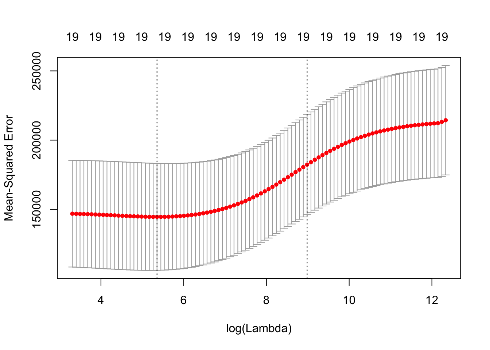
bestlambda.ridge = cv.out.ridge$lambda.min
bestlambda.ridge## [1] 211.7416cv 검정오차 추정치가 가장 낮은 lambda 값을 이용하여 검정셋에서 검정오차를 구함
ridge.pred = predict(ridge.mod, s=bestlambda.ridge, newx = x[-train,])
mean((ridge.pred - y.test)^2)## [1] 96012.47전체 데이터셋에서 ridge regression 모델을 만들고, 해당 coefficients 값을 구함
ridge.out = glmnet(x,y,alpha = 0)
predict(ridge.out, type = "coefficients", s=bestlambda.ridge)## 20 x 1 sparse Matrix of class "dgCMatrix"
## 1
## (Intercept) 9.88487157
## AtBat 0.03143991
## Hits 1.00882875
## HmRun 0.13927624
## Runs 1.11320781
## RBI 0.87318990
## Walks 1.80410229
## Years 0.13074381
## CAtBat 0.01113978
## CHits 0.06489843
## CHmRun 0.45158546
## CRuns 0.12900049
## CRBI 0.13737712
## CWalks 0.02908572
## LeagueN 27.18227535
## DivisionW -91.63411299
## PutOuts 0.19149252
## Assists 0.04254536
## Errors -1.81244470
## NewLeagueN 7.21208390lasso
lasso.mod = glmnet(x[train,], y[train], alpha = 1, lambda = grid)
plot(lasso.mod)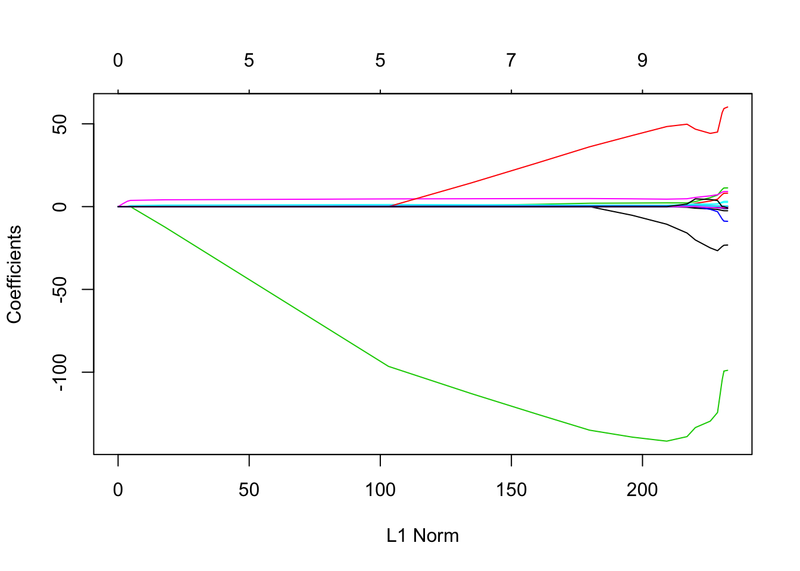
set.seed(1)
cv.lasso.out = cv.glmnet(x[train,], y[train], alpha=1)
plot(cv.lasso.out)
bestlambda.lasso = cv.lasso.out$lambda.min
lasso.pred = predict(lasso.mod, s=bestlambda.lasso, newx = x[-train,])
mean((lasso.pred - y.test)^2)## [1] 100743.4lasso.out = glmnet(x,y,alpha = 1, lambda = grid)
lasso.coef = predict(lasso.out, type = "coefficients", s=bestlambda.lasso)
lasso.coef## 20 x 1 sparse Matrix of class "dgCMatrix"
## 1
## (Intercept) 18.5394844
## AtBat .
## Hits 1.8735390
## HmRun .
## Runs .
## RBI .
## Walks 2.2178444
## Years .
## CAtBat .
## CHits .
## CHmRun .
## CRuns 0.2071252
## CRBI 0.4130132
## CWalks .
## LeagueN 3.2666677
## DivisionW -103.4845458
## PutOuts 0.2204284
## Assists .
## Errors .
## NewLeagueN .linear regression
lm.fit = lm(Salary~., data = Hitters, subset = train)
lm.pred = predict(lm.fit, newdata = Hitters[-train,])
mean((lm.pred - y.test)^2)## [1] 114780.6Dimension reduction
- principal component regression (PCR)
- partial least square (PLS)
p개의 설명변수들을 m개의 (m
: 분산이 가장 큰 방향 (첫번째 주성분)
- PLS
- PCA의 supervised version
- 반응변수와 극대화된 상관관계를 갖도록 선형결합
library(pls)##
## Attaching package: 'pls'## The following object is masked from 'package:caret':
##
## R2## The following object is masked from 'package:stats':
##
## loadingsset.seed(2)
pcr.fit = pcr(Salary~., data = Hitters, subset = train, scale = TRUE, validation = "CV")
summary(pcr.fit)## Data: X dimension: 131 19
## Y dimension: 131 1
## Fit method: svdpc
## Number of components considered: 19
##
## VALIDATION: RMSEP
## Cross-validated using 10 random segments.
## (Intercept) 1 comps 2 comps 3 comps 4 comps 5 comps 6 comps
## CV 464.6 399.3 400.5 402.3 407.0 396.6 397.6
## adjCV 464.6 398.8 399.6 401.2 405.4 395.9 394.4
## 7 comps 8 comps 9 comps 10 comps 11 comps 12 comps 13 comps
## CV 395.3 396.3 400.1 413.3 413.9 417.0 416.9
## adjCV 393.3 394.0 397.6 410.2 410.7 413.7 413.2
## 14 comps 15 comps 16 comps 17 comps 18 comps 19 comps
## CV 413.1 414.6 414 402.3 396.8 399.2
## adjCV 409.4 410.9 410 398.3 392.7 395.0
##
## TRAINING: % variance explained
## 1 comps 2 comps 3 comps 4 comps 5 comps 6 comps 7 comps
## X 38.89 60.25 70.85 79.06 84.01 88.51 92.61
## Salary 28.44 31.33 32.53 33.69 36.64 40.28 40.41
## 8 comps 9 comps 10 comps 11 comps 12 comps 13 comps 14 comps
## X 95.20 96.78 97.63 98.27 98.89 99.27 99.56
## Salary 41.07 41.25 41.27 41.41 41.44 43.20 44.24
## 15 comps 16 comps 17 comps 18 comps 19 comps
## X 99.78 99.91 99.97 100.00 100.00
## Salary 44.30 45.50 49.66 51.13 51.18validationplot(pcr.fit, val.type = "MSEP")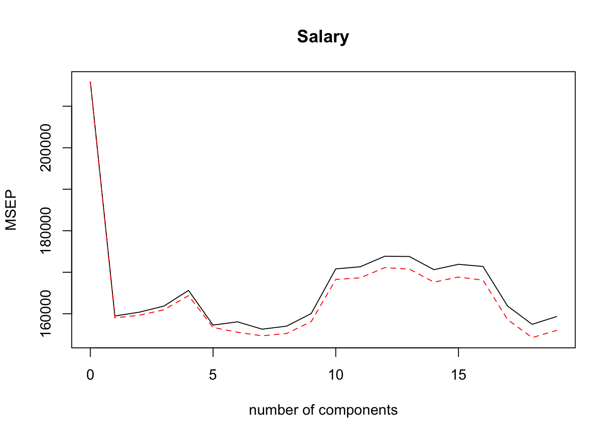
pcr.pred = predict(pcr.fit, x[-train,], ncomp = 2)
mean((pcr.pred - y.test)^2)## [1] 97563.65pcr.fit = pcr(y~x, scale = TRUE, ncomp = 2)
summary(pcr.fit)## Data: X dimension: 263 19
## Y dimension: 263 1
## Fit method: svdpc
## Number of components considered: 2
## TRAINING: % variance explained
## 1 comps 2 comps
## X 38.31 60.16
## y 40.63 41.58PLS
set.seed(1)
pls.fit = plsr(Salary~., data = Hitters, subset = train, scale = TRUE, validation = "CV")
summary(pls.fit)## Data: X dimension: 131 19
## Y dimension: 131 1
## Fit method: kernelpls
## Number of components considered: 19
##
## VALIDATION: RMSEP
## Cross-validated using 10 random segments.
## (Intercept) 1 comps 2 comps 3 comps 4 comps 5 comps 6 comps
## CV 464.6 394.2 391.5 393.1 395.0 415.0 424.0
## adjCV 464.6 393.4 390.2 391.1 392.9 411.5 418.8
## 7 comps 8 comps 9 comps 10 comps 11 comps 12 comps 13 comps
## CV 424.5 415.8 404.6 407.1 412.0 414.4 410.3
## adjCV 418.9 411.4 400.7 402.2 407.2 409.3 405.6
## 14 comps 15 comps 16 comps 17 comps 18 comps 19 comps
## CV 406.2 408.6 410.5 408.8 407.8 410.2
## adjCV 401.8 403.9 405.6 404.1 403.2 405.5
##
## TRAINING: % variance explained
## 1 comps 2 comps 3 comps 4 comps 5 comps 6 comps 7 comps
## X 38.12 53.46 66.05 74.49 79.33 84.56 87.09
## Salary 33.58 38.96 41.57 42.43 44.04 45.59 47.05
## 8 comps 9 comps 10 comps 11 comps 12 comps 13 comps 14 comps
## X 90.74 92.55 93.94 97.23 97.88 98.35 98.85
## Salary 47.53 48.42 49.68 50.04 50.54 50.78 50.92
## 15 comps 16 comps 17 comps 18 comps 19 comps
## X 99.11 99.43 99.78 99.99 100.00
## Salary 51.04 51.11 51.15 51.16 51.18validationplot(pls.fit, val.type = "MSEP")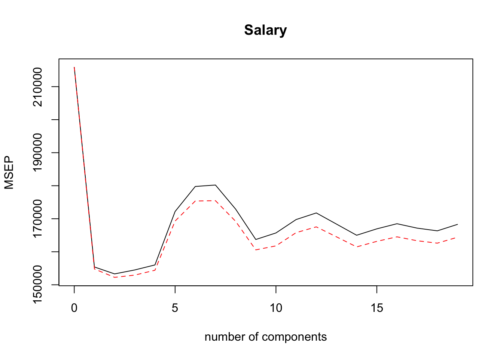
pls.pred = predict(pls.fit, x[-train,], ncomp = 2)
mean((pls.pred-y.test)^2)## [1] 101417.5pls.fit=plsr(Salary~., data=Hitters, scale=TRUE, ncomp=2)
summary(pls.fit)## Data: X dimension: 263 19
## Y dimension: 263 1
## Fit method: kernelpls
## Number of components considered: 2
## TRAINING: % variance explained
## 1 comps 2 comps
## X 38.08 51.03
## Salary 43.05 46.40Unsupervised Learning
- Principal component analysis (PCA)
- K-mean clustering
- Hierchical clustering
not interested in prediction
then, for what?
- PCA
- data visualization and preprocessing for high-dimensional data
- clustering
- subgrouping of predictors or observations which may provide valuable insignts on the data
PCA
- the first principal component
- 변수들의 정규화된 (normalized) 선형결합 (가장 큰 분산을 가지는, 즉 관측치가 가장 많이 변화되는 변수공간의 방향)
\[Z_1 = \phi_{11}X_1 + \phi_{21}X_2 + ... + \phi_{p1}X_p\]
\[\sum_{j=1}^p \phi^2_{j1} = 1\]
loading vector (length=p)
\[\phi_1 = (\phi_{11}, \phi_{21},,,\phi_{p1})^T\]
principal component scores (length=n)
\[(z_{11}, z_{21},,, z_{n1})\]
- the second principal component
- 첫번째 주성분과 상관되지 않은 (uncorrelated, orthogonal) \(X_1, X_2,,, X_p\) 의 모든 선형결합 중에서 분산을 최대로 하는 선형결합
- 변수 스케일링
- 스케일링되지 않은 변수에 PCA 를 수행하면 단순히 분산이 큰 변수에 의해 주성분벡터가 결정됨
states = row.names(USArrests)
states## [1] "Alabama" "Alaska" "Arizona" "Arkansas"
## [5] "California" "Colorado" "Connecticut" "Delaware"
## [9] "Florida" "Georgia" "Hawaii" "Idaho"
## [13] "Illinois" "Indiana" "Iowa" "Kansas"
## [17] "Kentucky" "Louisiana" "Maine" "Maryland"
## [21] "Massachusetts" "Michigan" "Minnesota" "Mississippi"
## [25] "Missouri" "Montana" "Nebraska" "Nevada"
## [29] "New Hampshire" "New Jersey" "New Mexico" "New York"
## [33] "North Carolina" "North Dakota" "Ohio" "Oklahoma"
## [37] "Oregon" "Pennsylvania" "Rhode Island" "South Carolina"
## [41] "South Dakota" "Tennessee" "Texas" "Utah"
## [45] "Vermont" "Virginia" "Washington" "West Virginia"
## [49] "Wisconsin" "Wyoming"names(USArrests)## [1] "Murder" "Assault" "UrbanPop" "Rape"summary(USArrests)## Murder Assault UrbanPop Rape
## Min. : 0.800 Min. : 45.0 Min. :32.00 Min. : 7.30
## 1st Qu.: 4.075 1st Qu.:109.0 1st Qu.:54.50 1st Qu.:15.07
## Median : 7.250 Median :159.0 Median :66.00 Median :20.10
## Mean : 7.788 Mean :170.8 Mean :65.54 Mean :21.23
## 3rd Qu.:11.250 3rd Qu.:249.0 3rd Qu.:77.75 3rd Qu.:26.18
## Max. :17.400 Max. :337.0 Max. :91.00 Max. :46.00apply(USArrests, 2, var)## Murder Assault UrbanPop Rape
## 18.97047 6945.16571 209.51878 87.72916pr.out = prcomp(USArrests, scale = TRUE)
names(pr.out)## [1] "sdev" "rotation" "center" "scale" "x"pr.out$rotation # loading vectors ## PC1 PC2 PC3 PC4
## Murder -0.5358995 0.4181809 -0.3412327 0.64922780
## Assault -0.5831836 0.1879856 -0.2681484 -0.74340748
## UrbanPop -0.2781909 -0.8728062 -0.3780158 0.13387773
## Rape -0.5434321 -0.1673186 0.8177779 0.08902432pr.out$x # pc scores## PC1 PC2 PC3 PC4
## Alabama -0.97566045 1.12200121 -0.43980366 0.154696581
## Alaska -1.93053788 1.06242692 2.01950027 -0.434175454
## Arizona -1.74544285 -0.73845954 0.05423025 -0.826264240
## Arkansas 0.13999894 1.10854226 0.11342217 -0.180973554
## California -2.49861285 -1.52742672 0.59254100 -0.338559240
## Colorado -1.49934074 -0.97762966 1.08400162 0.001450164
## Connecticut 1.34499236 -1.07798362 -0.63679250 -0.117278736
## Delaware -0.04722981 -0.32208890 -0.71141032 -0.873113315
## Florida -2.98275967 0.03883425 -0.57103206 -0.095317042
## Georgia -1.62280742 1.26608838 -0.33901818 1.065974459
## Hawaii 0.90348448 -1.55467609 0.05027151 0.893733198
## Idaho 1.62331903 0.20885253 0.25719021 -0.494087852
## Illinois -1.36505197 -0.67498834 -0.67068647 -0.120794916
## Indiana 0.50038122 -0.15003926 0.22576277 0.420397595
## Iowa 2.23099579 -0.10300828 0.16291036 0.017379470
## Kansas 0.78887206 -0.26744941 0.02529648 0.204421034
## Kentucky 0.74331256 0.94880748 -0.02808429 0.663817237
## Louisiana -1.54909076 0.86230011 -0.77560598 0.450157791
## Maine 2.37274014 0.37260865 -0.06502225 -0.327138529
## Maryland -1.74564663 0.42335704 -0.15566968 -0.553450589
## Massachusetts 0.48128007 -1.45967706 -0.60337172 -0.177793902
## Michigan -2.08725025 -0.15383500 0.38100046 0.101343128
## Minnesota 1.67566951 -0.62590670 0.15153200 0.066640316
## Mississippi -0.98647919 2.36973712 -0.73336290 0.213342049
## Missouri -0.68978426 -0.26070794 0.37365033 0.223554811
## Montana 1.17353751 0.53147851 0.24440796 0.122498555
## Nebraska 1.25291625 -0.19200440 0.17380930 0.015733156
## Nevada -2.84550542 -0.76780502 1.15168793 0.311354436
## New Hampshire 2.35995585 -0.01790055 0.03648498 -0.032804291
## New Jersey -0.17974128 -1.43493745 -0.75677041 0.240936580
## New Mexico -1.96012351 0.14141308 0.18184598 -0.336121113
## New York -1.66566662 -0.81491072 -0.63661186 -0.013348844
## North Carolina -1.11208808 2.20561081 -0.85489245 -0.944789648
## North Dakota 2.96215223 0.59309738 0.29824930 -0.251434626
## Ohio 0.22369436 -0.73477837 -0.03082616 0.469152817
## Oklahoma 0.30864928 -0.28496113 -0.01515592 0.010228476
## Oregon -0.05852787 -0.53596999 0.93038718 -0.235390872
## Pennsylvania 0.87948680 -0.56536050 -0.39660218 0.355452378
## Rhode Island 0.85509072 -1.47698328 -1.35617705 -0.607402746
## South Carolina -1.30744986 1.91397297 -0.29751723 -0.130145378
## South Dakota 1.96779669 0.81506822 0.38538073 -0.108470512
## Tennessee -0.98969377 0.85160534 0.18619262 0.646302674
## Texas -1.34151838 -0.40833518 -0.48712332 0.636731051
## Utah 0.54503180 -1.45671524 0.29077592 -0.081486749
## Vermont 2.77325613 1.38819435 0.83280797 -0.143433697
## Virginia 0.09536670 0.19772785 0.01159482 0.209246429
## Washington 0.21472339 -0.96037394 0.61859067 -0.218628161
## West Virginia 2.08739306 1.41052627 0.10372163 0.130583080
## Wisconsin 2.05881199 -0.60512507 -0.13746933 0.182253407
## Wyoming 0.62310061 0.31778662 -0.23824049 -0.164976866biplot(pr.out)
pr.out$rotation = -pr.out$rotation # loading vectors
pr.out$x = -pr.out$x # pc scores
biplot(pr.out, scale = 0)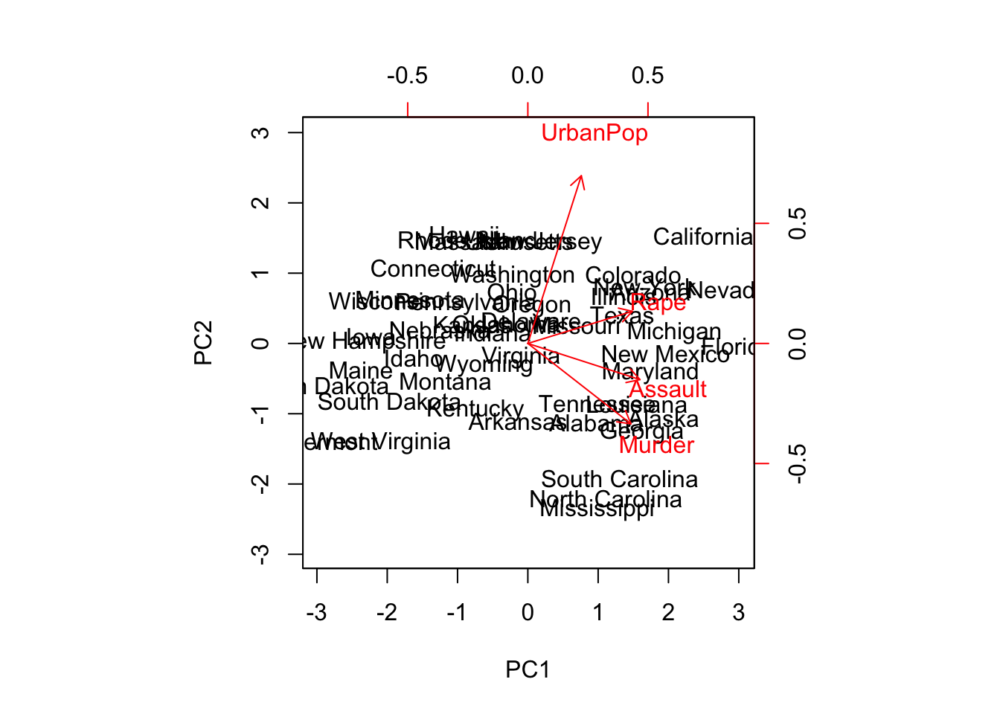
pr.var = pr.out$sdev^2
pr.var## [1] 2.4802416 0.9897652 0.3565632 0.1734301pve = pr.var/sum(pr.var)
pve## [1] 0.62006039 0.24744129 0.08914080 0.04335752plot(pve, xlab = "Principal component", ylab = "Proportion of Variance Explained", type = "b") # scree plot 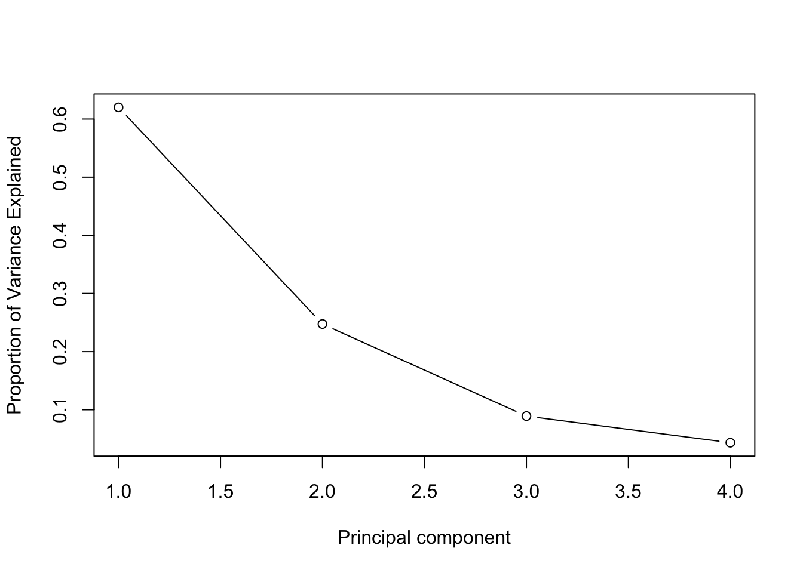
library(ISLR)
class(NCI60) # NCI60: 64개 암세포주에 대한 6830개의 유전자 발현 관측치 ## [1] "list"names(NCI60)## [1] "data" "labs"nci.labs = NCI60$labs
nci.labs## [1] "CNS" "CNS" "CNS" "RENAL" "BREAST"
## [6] "CNS" "CNS" "BREAST" "NSCLC" "NSCLC"
## [11] "RENAL" "RENAL" "RENAL" "RENAL" "RENAL"
## [16] "RENAL" "RENAL" "BREAST" "NSCLC" "RENAL"
## [21] "UNKNOWN" "OVARIAN" "MELANOMA" "PROSTATE" "OVARIAN"
## [26] "OVARIAN" "OVARIAN" "OVARIAN" "OVARIAN" "PROSTATE"
## [31] "NSCLC" "NSCLC" "NSCLC" "LEUKEMIA" "K562B-repro"
## [36] "K562A-repro" "LEUKEMIA" "LEUKEMIA" "LEUKEMIA" "LEUKEMIA"
## [41] "LEUKEMIA" "COLON" "COLON" "COLON" "COLON"
## [46] "COLON" "COLON" "COLON" "MCF7A-repro" "BREAST"
## [51] "MCF7D-repro" "BREAST" "NSCLC" "NSCLC" "NSCLC"
## [56] "MELANOMA" "BREAST" "BREAST" "MELANOMA" "MELANOMA"
## [61] "MELANOMA" "MELANOMA" "MELANOMA" "MELANOMA"table(nci.labs) # 14개 유형 ## nci.labs
## BREAST CNS COLON K562A-repro K562B-repro LEUKEMIA
## 7 5 7 1 1 6
## MCF7A-repro MCF7D-repro MELANOMA NSCLC OVARIAN PROSTATE
## 1 1 8 9 6 2
## RENAL UNKNOWN
## 9 1nci.data = NCI60$datapr.out = prcomp(nci.data, scale = TRUE) library(ggplot2)
df = data.frame(pr.out$x[,c(1,2,3)], nci.labs)
ggplot(data = df, aes(x=PC1, y=PC2, col = nci.labs)) + geom_point(size = 3)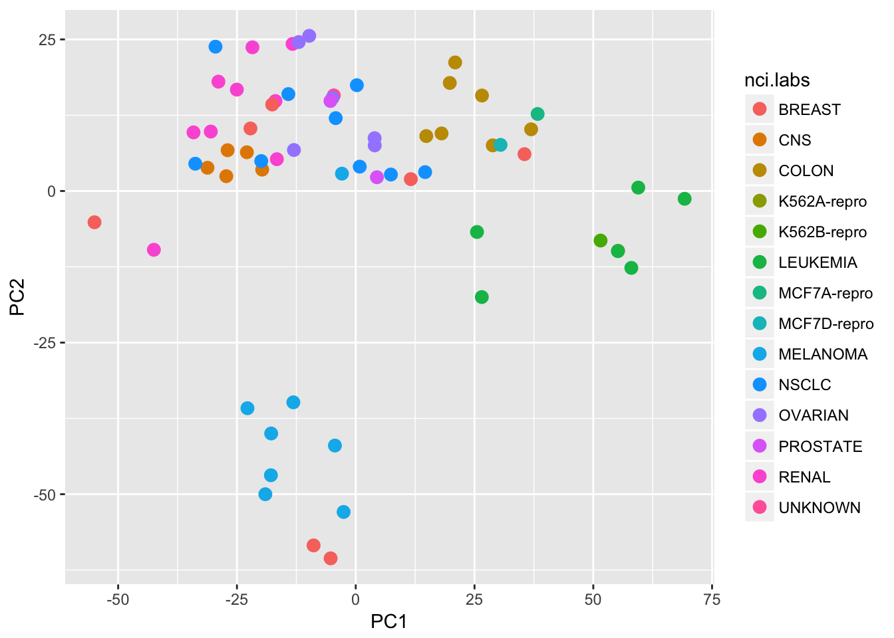
summary(pr.out)## Importance of components:
## PC1 PC2 PC3 PC4 PC5
## Standard deviation 27.8535 21.48136 19.82046 17.03256 15.97181
## Proportion of Variance 0.1136 0.06756 0.05752 0.04248 0.03735
## Cumulative Proportion 0.1136 0.18115 0.23867 0.28115 0.31850
## PC6 PC7 PC8 PC9 PC10
## Standard deviation 15.72108 14.47145 13.54427 13.14400 12.73860
## Proportion of Variance 0.03619 0.03066 0.02686 0.02529 0.02376
## Cumulative Proportion 0.35468 0.38534 0.41220 0.43750 0.46126
## PC11 PC12 PC13 PC14 PC15
## Standard deviation 12.68672 12.15769 11.83019 11.62554 11.43779
## Proportion of Variance 0.02357 0.02164 0.02049 0.01979 0.01915
## Cumulative Proportion 0.48482 0.50646 0.52695 0.54674 0.56590
## PC16 PC17 PC18 PC19 PC20
## Standard deviation 11.00051 10.65666 10.48880 10.43518 10.3219
## Proportion of Variance 0.01772 0.01663 0.01611 0.01594 0.0156
## Cumulative Proportion 0.58361 0.60024 0.61635 0.63229 0.6479
## PC21 PC22 PC23 PC24 PC25 PC26
## Standard deviation 10.14608 10.0544 9.90265 9.64766 9.50764 9.33253
## Proportion of Variance 0.01507 0.0148 0.01436 0.01363 0.01324 0.01275
## Cumulative Proportion 0.66296 0.6778 0.69212 0.70575 0.71899 0.73174
## PC27 PC28 PC29 PC30 PC31 PC32
## Standard deviation 9.27320 9.0900 8.98117 8.75003 8.59962 8.44738
## Proportion of Variance 0.01259 0.0121 0.01181 0.01121 0.01083 0.01045
## Cumulative Proportion 0.74433 0.7564 0.76824 0.77945 0.79027 0.80072
## PC33 PC34 PC35 PC36 PC37 PC38
## Standard deviation 8.37305 8.21579 8.15731 7.97465 7.90446 7.82127
## Proportion of Variance 0.01026 0.00988 0.00974 0.00931 0.00915 0.00896
## Cumulative Proportion 0.81099 0.82087 0.83061 0.83992 0.84907 0.85803
## PC39 PC40 PC41 PC42 PC43 PC44
## Standard deviation 7.72156 7.58603 7.45619 7.3444 7.10449 7.0131
## Proportion of Variance 0.00873 0.00843 0.00814 0.0079 0.00739 0.0072
## Cumulative Proportion 0.86676 0.87518 0.88332 0.8912 0.89861 0.9058
## PC45 PC46 PC47 PC48 PC49 PC50
## Standard deviation 6.95839 6.8663 6.80744 6.64763 6.61607 6.40793
## Proportion of Variance 0.00709 0.0069 0.00678 0.00647 0.00641 0.00601
## Cumulative Proportion 0.91290 0.9198 0.92659 0.93306 0.93947 0.94548
## PC51 PC52 PC53 PC54 PC55 PC56
## Standard deviation 6.21984 6.20326 6.06706 5.91805 5.91233 5.73539
## Proportion of Variance 0.00566 0.00563 0.00539 0.00513 0.00512 0.00482
## Cumulative Proportion 0.95114 0.95678 0.96216 0.96729 0.97241 0.97723
## PC57 PC58 PC59 PC60 PC61 PC62
## Standard deviation 5.47261 5.2921 5.02117 4.68398 4.17567 4.08212
## Proportion of Variance 0.00438 0.0041 0.00369 0.00321 0.00255 0.00244
## Cumulative Proportion 0.98161 0.9857 0.98940 0.99262 0.99517 0.99761
## PC63 PC64
## Standard deviation 4.04124 2.148e-14
## Proportion of Variance 0.00239 0.000e+00
## Cumulative Proportion 1.00000 1.000e+00K-means clustering
n개 관측치들을 K개 클러스터로 분할하는 방법: \(K^n\) 모든 가능한 경우들 중에서 within cluster variation 을 가장 작게만드는 분할을 찾지 않고 (global optimum), 대신 국소 최적값(local optimum)을 제공하는 알고리즘을 사용한다.
즉,
각 관측치에 1에서 K까지의 숫자를 랜덤하게 할당한다. 이것은 관측체에 대한 초기 클러스터 할당으로 작용한다.
클러스터 할당이 변하지 않을 때까지 다음을 반복한다.
- 2-1. K개 클러스터 각각에 대해 클러스터 무게중심을 계산한다 (p 변수 평균들의 벡터)
- 2-2. 각 관측치를 그 무게 중심이 가장 가까운 클러스터에 할당한다.
Hierachical clustering
bottom-up or agglomerative
dendrogram
distance measures… - euclidean distance
\[d_{euc}(x,y) = \sqrt{\sum_{i=1}^n(x_i - y_i)^2}\]
manhattan distance
\[d_{man}(x,y) = \sum_{i=1}^n |{(x_i - y_i)|}\]pearson correlation distance
\[d_{cor}(x, y) = 1 - \frac{\sum\limits_{i=1}^n (x_i - \bar{x})(y_i - \bar{y})}{\sqrt{\sum\limits_{i=1}^n(x_i - \bar{x})^2 \sum\limits_{i=1}^n(y_i -\bar{y})^2}}\]
스케일링
\[\frac{x_i - center(x)}{scale(x)}\]
linkage
- complete linkage
- average linkage
- single linkage
- centroid linkage
sd.data = scale(nci.data) # scaling data.dist = dist(sd.data)
hclust.complete = hclust(data.dist, method = "complete")
plot(hclust.complete, labels = nci.labs, main = "complete linkage")
hc.clusters = cutree(hclust.complete, 5)
table(hc.clusters, nci.labs)## nci.labs
## hc.clusters BREAST CNS COLON K562A-repro K562B-repro LEUKEMIA MCF7A-repro
## 1 0 3 2 0 0 0 0
## 2 3 2 0 0 0 0 0
## 3 0 0 0 1 1 6 0
## 4 2 0 5 0 0 0 1
## 5 2 0 0 0 0 0 0
## nci.labs
## hc.clusters MCF7D-repro MELANOMA NSCLC OVARIAN PROSTATE RENAL UNKNOWN
## 1 0 2 7 6 2 8 1
## 2 0 0 1 0 0 1 0
## 3 0 0 0 0 0 0 0
## 4 1 0 0 0 0 0 0
## 5 0 6 1 0 0 0 0abline(h=135, col="red")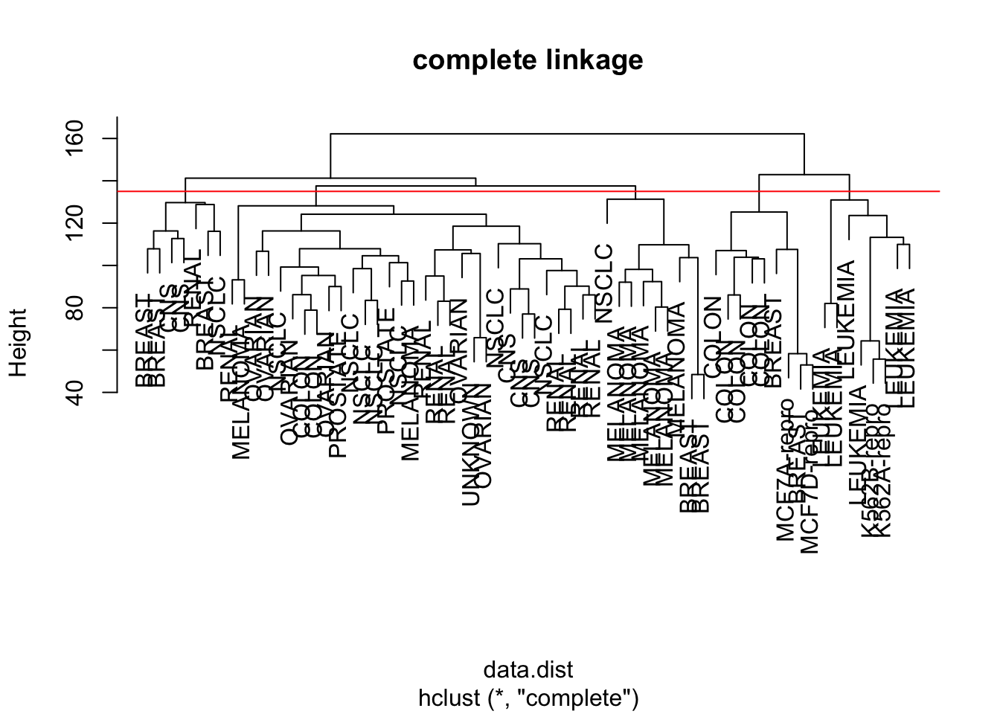
set.seed(2)
km.out = kmeans(sd.data, 5, nstart = 20)
km.clusters = km.out$cluster
table(km.clusters, hc.clusters)## hc.clusters
## km.clusters 1 2 3 4 5
## 1 1 0 0 0 8
## 2 20 7 0 0 0
## 3 0 0 0 4 0
## 4 10 0 0 5 1
## 5 0 0 8 0 0pc.dist = dist(pr.out$x[,1:5])
hc.out = hclust(pc.dist)
plot(hc.out, labels = nci.labs, main = "Hier. Clust. on First Five Score Vectors")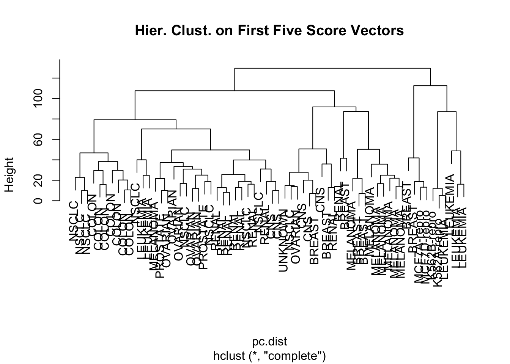
hc.clusters = cutree(hc.out, 4)
table(hc.clusters, nci.labs)## nci.labs
## hc.clusters BREAST CNS COLON K562A-repro K562B-repro LEUKEMIA MCF7A-repro
## 1 0 2 7 0 0 2 0
## 2 5 3 0 0 0 0 0
## 3 0 0 0 1 1 4 0
## 4 2 0 0 0 0 0 1
## nci.labs
## hc.clusters MCF7D-repro MELANOMA NSCLC OVARIAN PROSTATE RENAL UNKNOWN
## 1 0 1 8 5 2 7 0
## 2 0 7 1 1 0 2 1
## 3 0 0 0 0 0 0 0
## 4 1 0 0 0 0 0 0set.seed(3)
pc.scale = scale(pr.out$x[,1:5])
km.out = kmeans(pc.scale, 4, nstart = 20)
table(km.out$cluster, hc.clusters)## hc.clusters
## 1 2 3 4
## 1 32 11 0 0
## 2 0 0 0 4
## 3 2 0 6 0
## 4 0 9 0 0Heatmap
df.scaled = scale(USArrests)
df.dist = dist(df.scaled) # row-wise distance matrix
hc.out = hclust(df.dist, method = "complete")
plot(hc.out)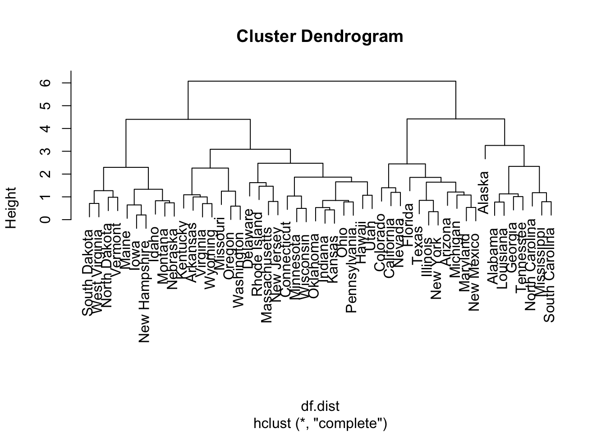
hc.clusters = cutree(hc.out, 4)
cluster.membership = hc.clusters load package
library(pheatmap)mat = as.matrix(t(df.scaled))
apply(mat, 1, sd)## Murder Assault UrbanPop Rape
## 1 1 1 1pheatmap(mat,
cluster_rows = T,
# cellheight = 20,
annotation_col = data.frame(cluster.membership))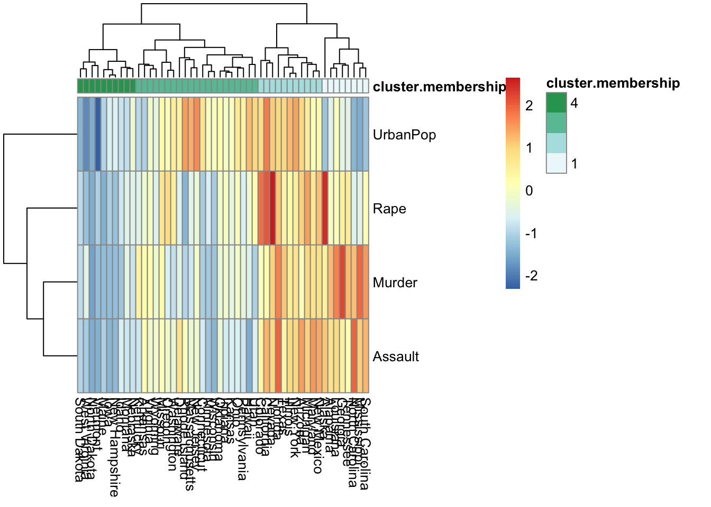